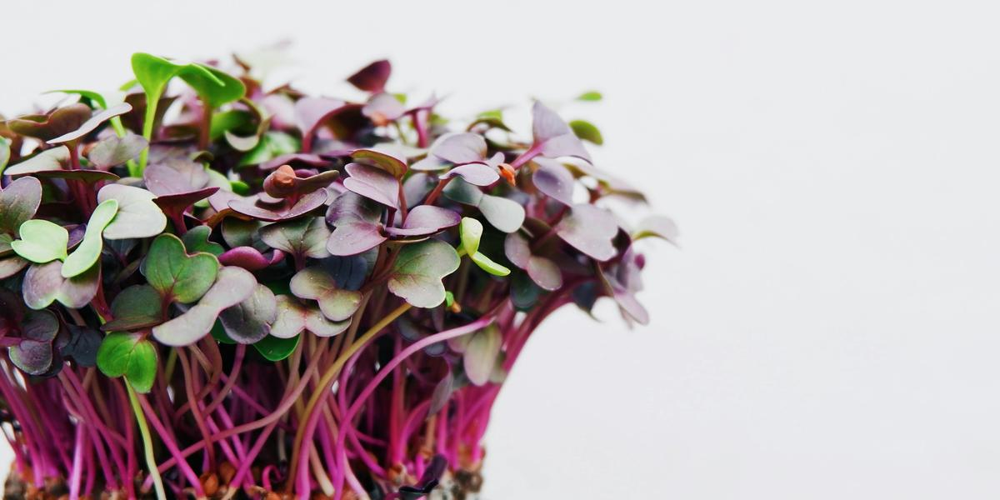

The Easiest Microgreens for Beginners
This post may contain affiliate links. As an Amazon Associate I earn from qualifying purchases.
There are dozens of crops you can grow as microgreens. UF/IFAS notes that 80 to 100 different crop varieties have reportedly been used. For your first few trays, though, pick varieties that sprout fast and forgive small mistakes. Here is where I would start.
Fast and forgiving picks
- Radish: on the UF/IFAS fast-growing list, with a peppery bite.
- Broccoli and cabbage: mild flavor; UF/IFAS lists them among seeds that do not need to be covered.
- Mustards and mizuna: fast growers with a little spice.
- Kale and kohlrabi: also on the fast-growing list, with a mild, familiar taste.
Bigger seeds, one extra step
- Peas: soak about 8 to 12 hours before sowing, per UF/IFAS.
- Sunflower: soak about 8 hours first.
These are a little more work, but they make thick, crunchy greens.
Save these for later
UF/IFAS lists basil, cilantro, beets, carrots, dill, and parsley among the slower-growing microgreens. They are worth trying once you have a few trays under your belt.
Skip lettuce for microgreens
Both UF/IFAS and N.C. Cooperative Extension note that lettuce is too delicate to make good microgreens. Grow it as full heads instead, like in my Kratky mason-jar guide.
Tips for mixing
It is easiest to sow one variety per tray. If you want a mix, N.C. Cooperative Extension suggests choosing varieties that germinate and reach harvest in about the same time.
Ready to plant? Follow grow your first tray of microgreens, and see seeds and trays on the gear list.